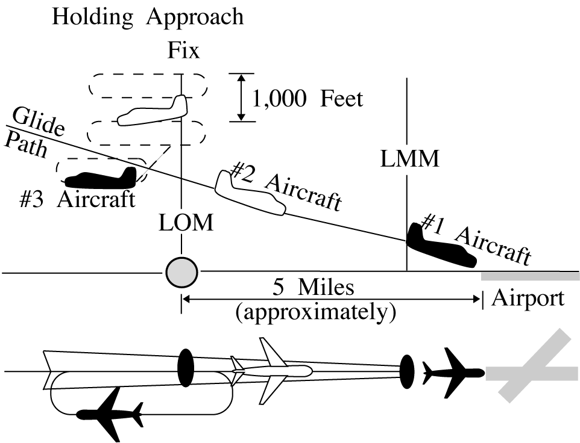
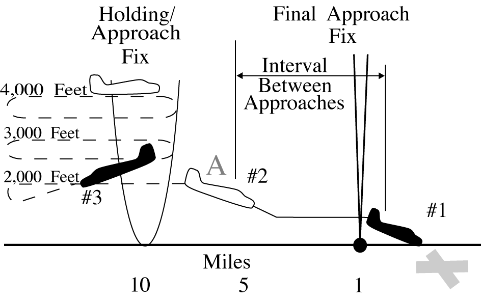

Chapter 6. Nonradar
Section 7. Timed Approaches
6-7-1. APPLICATION
Timed approaches using either nonradar procedures or radar vectors to the final approach course may be used at airports served by a tower if the following conditions are met:
- Direct communication is maintained with the aircraft until the pilot is instructed to contact the tower.
- If more than one missed approach procedure is available, none require course reversal.
- If only one missed approach procedure is available, the following conditions are met:
- Course reversal is not required.
- Reported ceiling and visibility are equal to or greater than the highest prescribed circling minimums for the instrument approach procedure in use.
6-7-2. APPROACH SEQUENCE
When an aircraft passes the final approach fix inbound (nonprecision approach) or the outer marker or the fix used in lieu of the outer marker inbound (precision approach), issue clearances for a succeeding timed approach in accordance with the following:
- Clear the succeeding aircraft for approach, to descend to the altitude vacated by the preceding aircraft, and to leave the final approach fix inbound (nonprecision approach) or the outer marker or the fix used in lieu of the outer marker inbound (precision approach) at a specified time; or when using radar to sequence and position aircraft on the final approach course, vector aircraft to cross the final approach fix/outer marker or the fix used in lieu of the outer marker in compliance with paragraph 6-7-5, Interval Minima.
FIG 6-7-1Timed Approach Procedures 
- If an alternative missed approach procedure is not available and weather conditions are less than required by paragraph 6-7-1, Application, subparagraph c, clear the succeeding aircraft for an approach when the preceding aircraft has landed or canceled its IFR flight plan.
FIG 6-7-2Timed Approach Procedures Using a Bearing on an NDB and Longitudinal and Vertical Separation 
- Release the aircraft to the tower before it reaches the final approach fix.
6-7-3. SEQUENCE INTERRUPTION
Interrupt the established timed approach sequence if necessary to allow an aircraft to execute a different type of approach.
6-7-4. LEVEL FLIGHT RESTRICTION
If the weather report indicates an aircraft will be in IFR conditions over the final approach fix (nonprecision approach) or the outer marker or the fix used in lieu of the outer marker (precision approach) when paragraph 6-7-2, Approach Sequence, subparagraph b is applied, clear the second aircraft for an approach early enough to allow at least 1 minute of level flight before crossing the final approach fix/outer marker or the fix used in lieu of the outer marker.
6-7-5. INTERVAL MINIMA
- Except as provided in subparagraph b, use a 2‐minute or a 5‐mile radar interval as the minimum between successive approaches.
WAKE TURBULENCE APPLICATION
- EN ROUTE. Use the following time or radar interval as the minimum interval:
- Behind super:
- Heavy - 3 minutes or 6 miles.
- Large - 3 minutes or 7 miles.
- Small - 4 minutes or 8 miles.
- Small behind heavy - 3 minutes or 6 miles.
- Behind super:
- TERMINAL. Use the following times or radar intervals as the minimum:
- Behind Category A aircraft:
- Category B, C, or D aircraft – 3 minutes or 6 miles.
- Category E, F, or G aircraft – 3 minutes or 7 miles.
- Category H or I aircraft – 4 minutes or 8 miles.
- Category H or I aircraft behind Category B, C, or D aircraft – 3 minutes or 6 miles.
- Behind Category A aircraft:
- Increase the interval as necessary, considering the following:
- Relative speeds of the aircraft concerned.
- Existing weather conditions.
- Distance between the approach fix and the airport.
- Type of approach being made.
6-7-6. TIME CHECK
Issue a time check to an aircraft before specifying a time to leave the approach fix inbound unless the aircraft is vectored to the final approach course.
6-7-7. MISSED APPROACHES
- If weather conditions are such that an aircraft will likely miss an approach, issue an alternative missed approach procedure to the next aircraft.
- If an aircraft misses an approach, allow the next aircraft to continue the approach if it has been assigned an alternative missed approach procedure. Retain radar control or hold any remaining aircraft at assigned altitudes until traffic conditions permit the issuance of approach clearances.
- When paragraph 6-7-2, Approach Sequence, subparagraph b is applied and the first aircraft misses an approach, retain radar control or clear the second aircraft to maintain the last assigned altitude (minimum holding altitude) and return to the holding/approach fix to hold until traffic conditions permit the issuance of approach clearances.